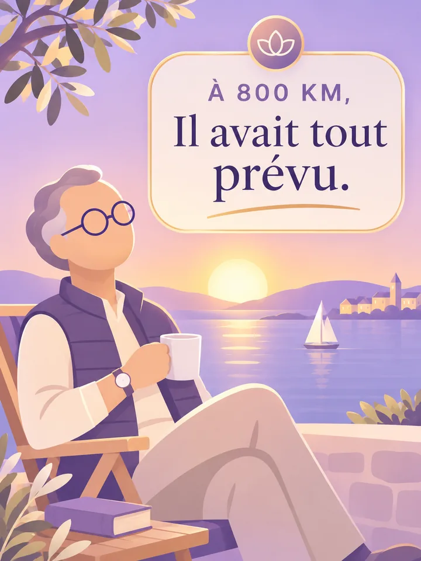
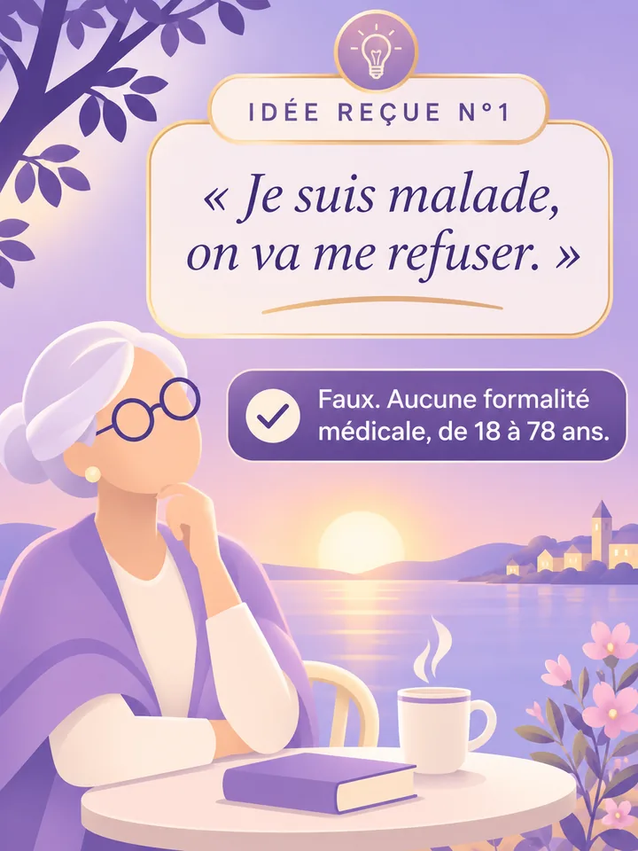
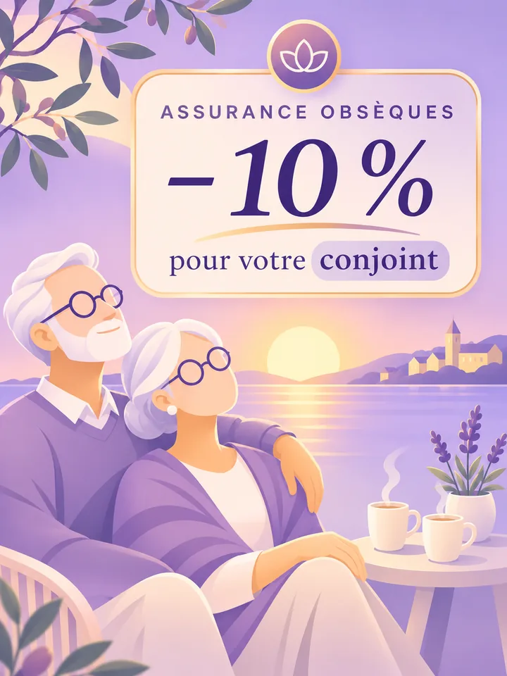

01
Aucun questionnaire médical
De 18 à 78 ans, on souscrit sans examen ni questions sur sa santé. Personne n'est mis de côté.
Assurance obsèques
Prévoyez aujourd'hui.
Vos proches n'auront qu'à se souvenir.
Passez la souris pour dissiper la brumeTouchez l'écran pour dissiper la brume
Le jour où il faudra tout organiser
Lueur Bank permet de régler à l'avance le financement de ses obsèques, et d'offrir à ses proches une assistance concrète au moment où ils en ont le plus besoin.
Pourquoi choisir Lueur
De 18 à 78 ans, on souscrit sans examen ni questions sur sa santé. Personne n'est mis de côté.
Calculée selon l'âge et le capital choisi au départ, elle reste fixe pendant toute la durée du contrat. Paiement à vie ou sur 25 ans.
Aucun délai de carence en cas de décès accidentel. Pour les autres causes, la carence est d'un an, et les cotisations versées (hors assistance) sont alors remboursées.
Rapatriement, transport de deux proches, soutien psychologique, aide aux démarches : vos proches ne sont pas seuls.
Votre conjoint souscrit son propre contrat et bénéficie de 10 % de réduction sur sa cotisation.
Deux formules, une même tranquillité
1 500 € → 15 000 €
Idéal si vous voulez laisser vos proches organiser, en leur donnant les moyens.
Directement au prestataire
Idéal si vous voulez tout régler vous-même, à l'avance.
Vous cotisez jusqu'au décès.
Vous cotisez sur une durée limitée à 25 ans.
Dans les deux cas, le montant est fixé à la souscription et ne change plus.
L'assistance Lueur
Pris en charge si le décès survient à plus de 50 km du domicile.
Pour qu'ils puissent assister aux obsèques.
Un soutien pour traverser le deuil.
Une aide pour les démarches, quand tout se bouscule.
Trois histoires, trois besoins
Claire, 41 ans · deux enfants
Jean, 70 ans · jeune retraité, voyageur
Martine & Alain, 60 et 62 ans
En toute transparence
Ce n'est pas un placement. Selon votre âge et la durée de paiement, le total de vos cotisations peut dépasser le capital garanti.
Si le capital ne suffit pas à couvrir le coût des obsèques, vos proches règlent la différence.
Si vous arrêtez de payer, le contrat passe en réduction : la garantie est réduite et les prestations d'assistance prennent fin.
Hors accident, un délai de carence d'un an s'applique. Pendant ce délai, les cotisations versées (hors assistance) sont remboursées au bénéficiaire.
Vos questions, nos réponses
C'est possible si vous cotisez longtemps, et nous préférons vous le dire. Pour limiter ce risque, choisissez le paiement sur 25 ans plutôt que viager. Et gardez en tête que ce n'est pas un placement : c'est la certitude que vos obsèques sont financées et que vos proches seront accompagnés.
Non. Il n'y a aucune formalité médicale : la souscription est ouverte de 18 à 78 ans, sans questionnaire de santé.
En cas d'accident, vous êtes couvert dès le premier jour. Pour les autres causes, les cotisations versées (hors assistance) sont remboursées à votre bénéficiaire.
Non. Le contrat passe en réduction : vous conservez une garantie, réduite, mais les prestations d'assistance s'arrêtent.
Il ou elle souscrit son propre contrat et bénéficie de 10 % de réduction sur sa cotisation.
Le capital laisse à votre bénéficiaire la main sur l'organisation, avec l'obligation de l'utiliser pour les obsèques. Les prestations règlent directement l'entreprise funéraire que vous avez choisie : vos proches n'ont rien à avancer.
Sur les réseaux
Trois publications pour faire connaître l'offre avec douceur.

lueur.bank En vacances, loin de chez lui. Un appel, et tout est organisé : rapatriement, transport de deux proches, soutien psychologique. Prévoyez aujourd'hui, vos proches n'auront qu'à se souvenir. ✨

lueur.bank 3 idées reçues sur l'assurance obsèques. Swipez →

lueur.bank On a tout prévu ensemble : la maison, les vacances, les petits-enfants. Et maintenant, ça aussi. 🤍 −10 % sur la cotisation de votre conjoint, pour deux contrats souscrits séparément.
Parlons-en simplement
Un échange simple pour comprendre votre situation, choisir entre capital et prestations, et estimer votre cotisation.
Retrouvez Lueur Bank
sur votre téléphone